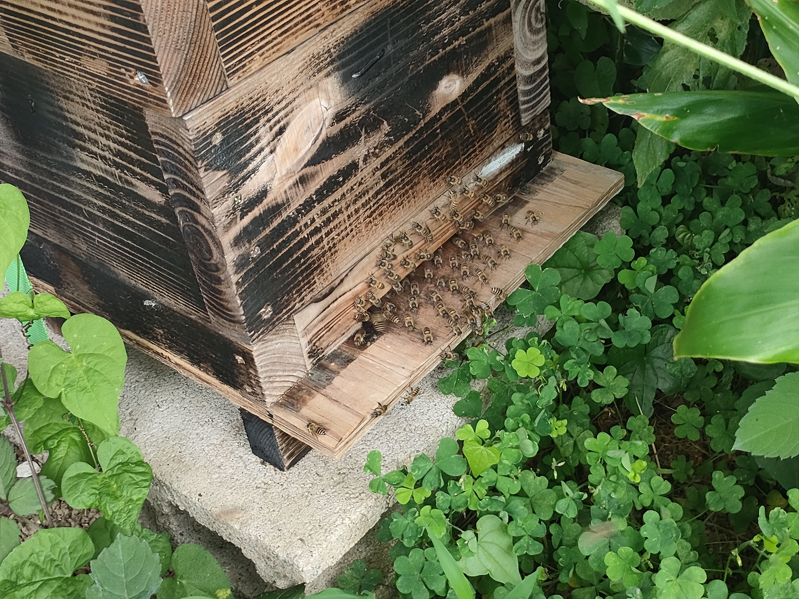

🐝 「百花乃恵 桜」（サ・ク・ラ）と（桜 プレミアム）
日本蜜蜂は、その土地の様々な花から蜜を集める「百花蜜」を生み出すことで知られ
「天然の良薬」とも称されるほど、滋養分が豊富なハチミツがここにあります。
百花乃恵 桜
ここでしか採れない、ここでしか味わえない
唯一無二の「桜区テロワール」...


🐝 なぜ日本ミツバチの蜂蜜は “ 貴重 ” なのか？
日本でのハチミツ消費は 約93%が輸入品です。
（その内、約80%は中国産）
さらに国内で生産される約7%のハチミツが、ほぼ 「※ 西洋ミツバチ」が集めたハチミツです。
日本蜜蜂と西洋ミツバチの集めるハチミツの違いを知っている人は極わずかではないでしょうか...
日本在来種である「 日本蜜蜂 」のはちみつシェアは、市場全体の1%にも満たない 極めて希少な存在！
世界三大「 偽装食品 」の一つとも言われているのが「蜂蜜」産業です。
尚更、本物の日本蜜蜂のハチミツをお召し上がりになった方は少ないと思います。
🐝 日本ミツバチと西洋ミツバチのちがい
| 項目 | 日本ミツバチ 🐝 | 西洋ミツバチ 🐝 |
|---|---|---|
| 種類 | 在来種（野生に近い） | 外来種（養蜂向け） |
| 採蜜量 | 少ない（年1〜2回） | 多い（年5〜6回） |
| 集める蜜 | 花の蜜だけ | 花の蜜が中心（補助エサも） |
| 性格 | おとなしく繊細 | 活発で生産性高い |
| 特徴 | 百種類以上の花の蜜／味が深い | 単一花が多く味が均一 |
🐝「百花蜜とは？」
さまざまな花々から集めた蜜が混ざり合った、自然そのままの蜂蜜のこと。
とくに日本ミツバチが集めた百花蜜は、味や香りが一つとして同じにならない一期一会の “ 天然ブレンド ”。
日本ミツバチは、四季折々の花の蜜だけを選んで集めるため、その風味は豊かで深く、香り高い──
食品衛生責任者 今村 正保
採蜜ボトル詰め製造所
さいたま市桜区西堀3-25-6